The Costco Aisle Find Women Over 50 Are Using to Thicken Thinning Hair
It looks like something you'd walk right past in a Costco aisle. But after a Cleveland hairdresser spent 7 years documenting over 400 cases of hair loss, one unassuming little bottle became the formula now selling out across America.
Carol H. wasn't trying to keep it a secret.
But when her sister saw her at a family lunch in Charlotte this spring, she stopped mid-sentence.
"She just stared at me," Carol, 58, remembers. "Then she said: 'Your hair. What on earth have you done to your hair?'"
Six months earlier, Carol's parting had grown so wide she'd stopped wearing her hair down. She'd quietly deleted the family photos from Christmas. She owned more scarves than she cared to admit.
Now there was new growth all along her parting, and her ponytail was, in her sister's words, "twice the hair you had last spring."
Her sister assumed it was a clinic. A prescription. Extensions, maybe.
Instead, Carol took her upstairs to the bathroom and pointed at the shelf.
Between the toothpaste and the hand cream stood a plain little dropper bottle. No fancy packaging. Nothing you'd look at twice.
"That's it," Carol told her. "One dropperful a day, massaged into my part. Thirty seconds. That's everything I do now."
The same unassuming bottle is now sitting on bathroom shelves all over America. It gets passed between sisters. Mentioned in hair loss forums. Quietly recommended by hairdressers from Portland to Tampa.
But to understand why this ordinary-looking bottle works when the $60 shampoos don't, you need to hear how it came to exist.
Because it didn't come from a pharmaceutical giant. It started with a Cleveland hairdresser, and a battered notebook in her station drawer.
THE CONVERSATION EVERY HAIRDRESSER DREADS
Nicole A. has been cutting hair for 22 years.
She's good at it. Her clients love her. Some have been coming to her since she opened her first salon at 27.
But there's one part of the job that's been quietly destroying her for two decades.
"It's the conversation," Nicole tells me, her voice dropping. "You know the one. They sit down. They won't meet your eyes in the mirror. And then they say it: 'Can you do anything with... what's left?'"
She pauses.
"I've had women cry in my chair hundreds of times. Hundreds. And every single time, I had to stand there with my scissors and say something reassuring while knowing, honestly knowing, that nothing I could recommend would actually help them."
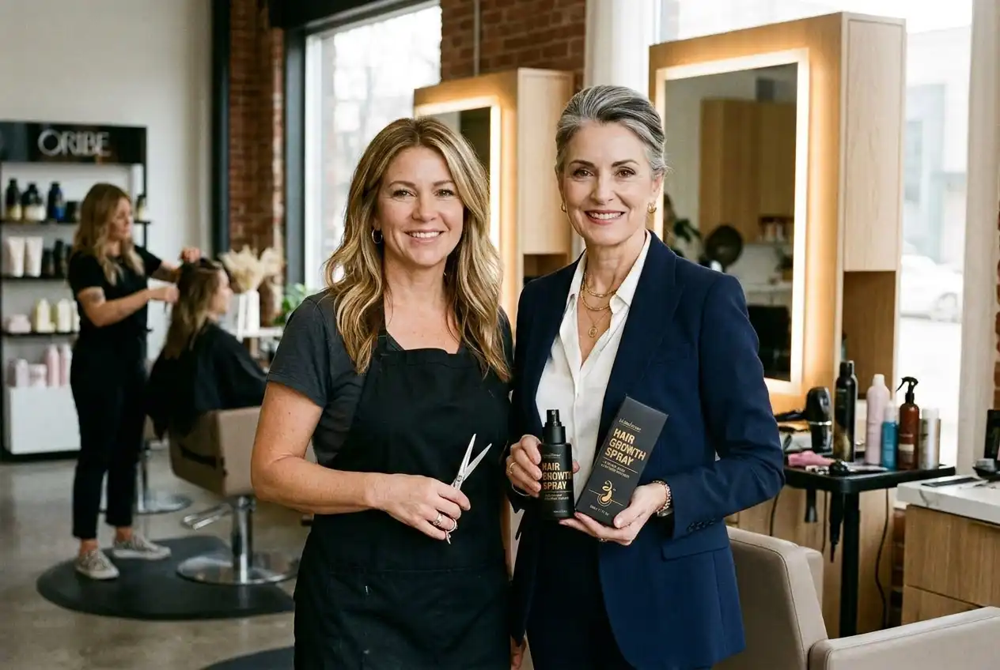
Nicole A. (left) and Dr. Rachel K. in Nicole's Cleveland salon, where Nicole spent 22 years watching clients struggle with hair loss before deciding to do something about it.
For years, Nicole did what hairdressers do. She recommended the expensive shampoos. The volumizing sprays. The keratin treatments.
She sold them from her own shelves.
And she watched them fail. Every single time.
"I knew they didn't work," she admits. "Deep down, every hairdresser knows. We sell them because our clients are desperate and we want to give them SOMETHING. But I'd see them come back three months later and their hair would be the same. Or worse."
That guilt ate at her. Until she started doing something unusual.
THE NOTEBOOK
About seven years ago, Nicole started keeping a notebook.
Nothing fancy. A battered Moleskine she kept in her station drawer.
Every time a client came in with thinning hair, Nicole would jot down details. Their age. When the thinning started. What they'd tried. Whether they'd had children. Whether they were going through menopause. What medications they were on.
She photographed scalps, with permission, and taped the photos in.
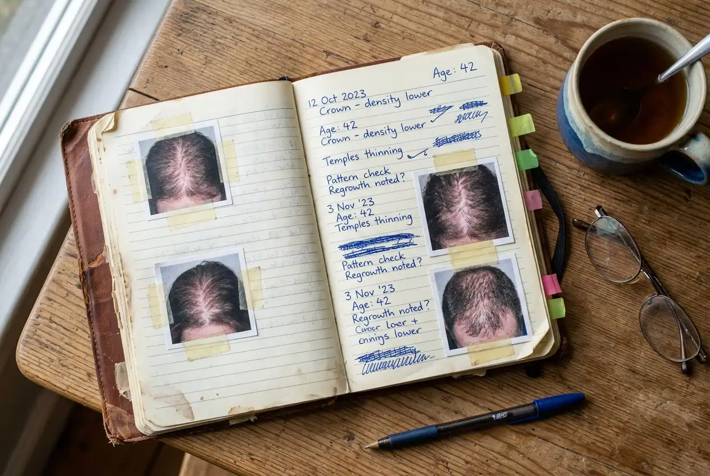
Nicole's original notebook. After 7 years, it contained over 400 documented cases of client hair loss, enough data to reveal a pattern nobody in the industry was talking about.
After a few years, the notebook was thick with entries. Over 400 women documented.
And Nicole noticed something that made the hairs on the back of her neck stand up.
The women who'd tried the most products had the worst hair loss.
Not because the products caused it. But because every product on the market was treating the wrong thing, and while these women were busy coating, conditioning, and supplementing, the real problem underneath was getting worse.
Nicole didn't know what that real problem was. She's a hairdresser, not a scientist.
But she knew someone who might.
THE SCHOOL REUNION THAT CHANGED EVERYTHING
Nicole and Dr. Rachel K. grew up three doors apart on a tree-lined street in Cleveland.
They were inseparable at school. Did everything together. Then life happened, Nicole went to cosmetology school, Rachel went to university. They lost touch for nearly 20 years.
Then, at a school reunion in 2022, they found each other again.
Rachel had spent her career in trichology research, the science of hair and scalp health. She'd worked with dermatology clinics across the country and published papers on hormonal hair loss in women.
Over a glass of wine, Nicole mentioned the notebook.
Rachel's face changed.
"She went completely still," Nicole remembers. "Then she said: 'Nicole, can I see it? Can I see the notebook?' I brought it to her the next day. She spread the photos across her kitchen table and just stared."
Dr. Rachel K., trichologist and researcher, who identified the DHT pattern in Nicole's 7 years of salon data.
What Rachel saw in those 400+ cases confirmed something she'd suspected for years.
"Every single case showed the same pattern," Rachel explains. "The follicle damage was consistent. The progression was consistent. And it all pointed to one thing: DHT."
DHT. Dihydrotestosterone.
The hormone that was strangling Nicole's clients' hair follicles, and that not a single product on her shelves was designed to address.
'YOUR FOLLICLES ARE BEING STRANGLED'
Rachel explained it to Nicole over that kitchen table. And now, sitting in Nicole's salon, she explains it to me.
"DHT builds up around the hair follicle over time," Rachel says. "After pregnancy. During perimenopause. Through stress. Simply through aging."
It wraps around the follicle like a weed strangling a plant.
It cuts off blood supply.
It starves the follicle of nutrients.
And slowly, strand by strand, your hair gets thinner, weaker, finer...
Until the follicle stops producing hair altogether.
"This is why nothing Nicole was selling worked," Rachel continues. "Thickening shampoos coat the outside of the hair. That's like putting makeup on a dying plant. Biotin tablets get flushed through your digestive system before they reach the follicle. Scalp oils sit on the surface. None of them get to where the DHT is doing the damage."
Nicole shakes her head.
"Twenty years," she says quietly. "Twenty years I was handing women products that couldn't possibly work. Because the whole industry was looking at the wrong thing."
But Rachel told her something else that day. Something that changed everything.
The follicles aren't dead. In most cases, they're just dormant.
"They're starved, not gone," Rachel explains. "Clear the DHT, feed them again, and many of them will wake up. Even follicles that haven't produced a hair in years."
Nicole looked at her oldest friend across the kitchen table.
"Can we fix this?"
Rachel smiled. "I think we can."
THREE YEARS OF DEVELOPMENT
What followed was three years of development. Rachel brought the science. Nicole brought 400 documented cases and a salon full of willing volunteers.
They needed a formula that could do four things:
Block DHT at the follicle level, help stop the strangling at the source.
Help restore blood flow to starved follicles, turn the nutrient supply back on.
Strengthen the hair from root to tip, help rebuild what DHT had weakened.
Help reactivate dormant follicles, wake up the roots that had gone to sleep.
And it had to be a leave-in serum. Not a pill, not a shampoo. A serum applied straight to the scalp with a dropper, and left there, bypassing the digestive system entirely.
It also had to be simple. Something that could live on an ordinary bathroom shelf, next to the toothpaste, and take thirty seconds a day. Nicole had 400 notebook entries proving that complicated routines get abandoned by week three.
"That was my big question," Nicole says. "I'd watched women take biotin tablets for years with no results. I kept saying to Rachel: 'Why are we sending nutrients on a tour of the entire body when the problem is right here on the scalp?' Turns out I was right."
The final formula uses four natural ingredients that work together:
✔ Caffeine, blocks DHT directly at the follicle. Competes with the hormone for receptor sites. Also extends the natural growth phase of each hair, giving strands more time to grow longer and thicker.
✔ Ginger Root Extract, floods the scalp with nutrient-rich blood flow. Like turning the water supply back on to a choked garden.
✔ Topical Biotin, delivers Vitamin B7 straight to the follicle (unlike tablets, which mostly pass straight through you). Builds keratin, the protein your hair is actually made of.
✔ He Shou Wu (Fo-Ti), a traditional herb shown to regenerate damaged follicles with similar effectiveness to prescription treatments. Without the itching, dryness, and irritation that make most women quit.
Nicole tested early versions on her most willing clients. The ones who'd cried in her chair. The ones she'd been lying to for years with products she knew didn't work.
This time, she wasn't lying.
What Published Research Shows About Key Ingredients
Based on peer-reviewed clinical trials of Saw Palmetto, Biotin & DHT-blocking botanicals
Sources: Evron et al. (2020), "Saw Palmetto, a Systematic Review in Alopecia," Skin Appendage Disorders, PMC7706486 • Sudeep et al. (2023), "Standardized Saw Palmetto Oil, 16-Week Randomized Placebo-Controlled Study," Clinical, Cosmetic and Investigational Dermatology, PMC10648974 • Ablon (2025-2026), Serevelle 180-day RCT, Journal of Cosmetic Dermatology • Individual results may vary.
Published clinical data on Crowned's key active ingredients.
83% of trial participants reported visible new hair growth within 12 weeks.
Not just less shedding.
New. Actual. Hair.
FROM SALON SECRET TO NATIONAL SENSATION
Word spread fast. First through Nicole's salon clients. Then through their friends. Then through online forums and hair loss support groups.
Women were posting photos. Sharing stories. Tagging each other. The waiting list grew from dozens to hundreds to thousands.
"We never planned a big launch," Nicole says. "It was supposed to be a small thing, just me and Rachel helping as many women as we could. But the results were so visible that people started talking. And once they started, they didn't stop."
Rachel knew they had something special. Not just because of the before-and-after photos, but because the clinical data backed everything up.
"When you have 83% of trial participants reporting visible new growth, and you have 400 documented cases from a real salon, that's not a fluke," Rachel says. "That's a formula that works."
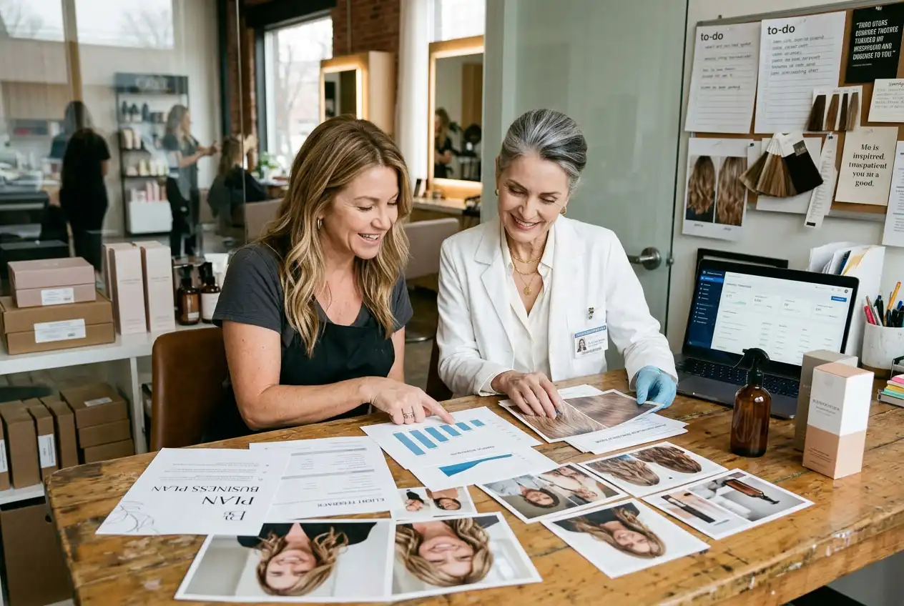
Nicole and Rachel reviewing the results that convinced them to take their formula nationwide.
They launched the formula as Crowned Peptide Hair Regrowth Serum.
It sold out in five minutes.
There was no flashy packaging. No celebrity endorsement. Just the plain, unassuming bottle that Carol's sister found on that bathroom shelf in Charlotte, and that thousands of women now reach for every morning without thinking twice.
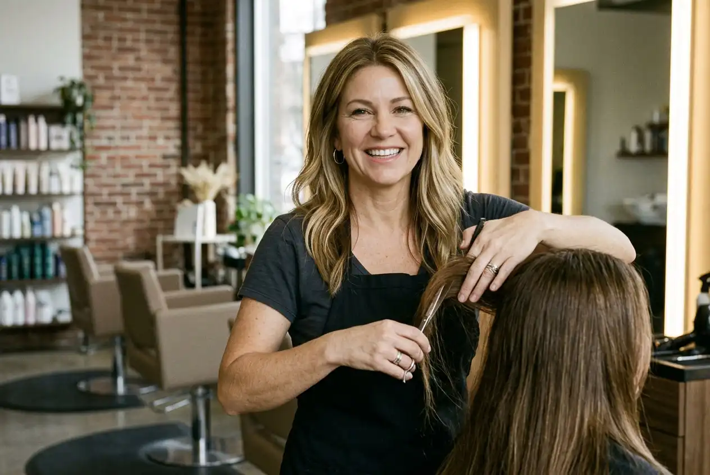
Nicole still works in her Cleveland salon four days a week, she says she'll never stop.
"This is where I belong," she says. "Behind the chair. The only difference now is that when a woman sits down and says 'Can you do anything?'... I finally can."
WHAT NICOLE'S CLIENTS REPORT
After testing Crowned on hundreds of salon clients and 10,000+ clinical trial participants, here's the typical timeline:
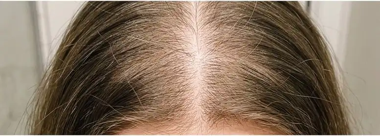
Weeks 1-2: Less hair in the brush and shower drain. The DHT blockade is taking effect. Follicles are being released from the stranglehold.
Weeks 3-4: Baby hairs appear, tiny new strands along the part line and temples. These are dormant follicles waking up for the first time in months or years. One of Nicole's longest-standing clients, who'd been coming to her for 12 years, rang the salon: "Nicole, I can see baby hairs. Am I imagining it?" She wasn't.
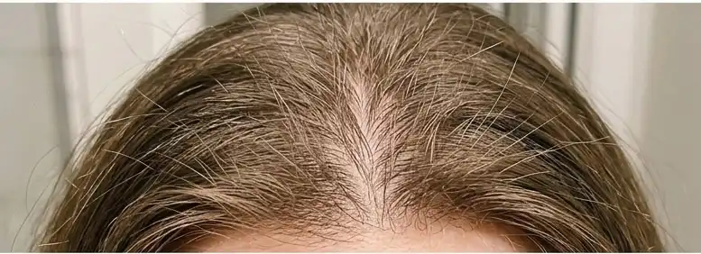
Weeks 6-8: Visible thickness. The ponytail feels fuller. The part line tightens. Friends notice. Hairdressers comment.
Month 3+: Full transformation. Most women report their hair looking and feeling better than it has in years. Some say decades.
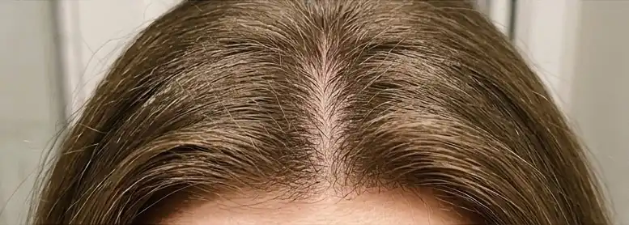
READER RESULTS
Since Crowned launched, thousands of women have tried Crowned. Here are three readers who wrote in:
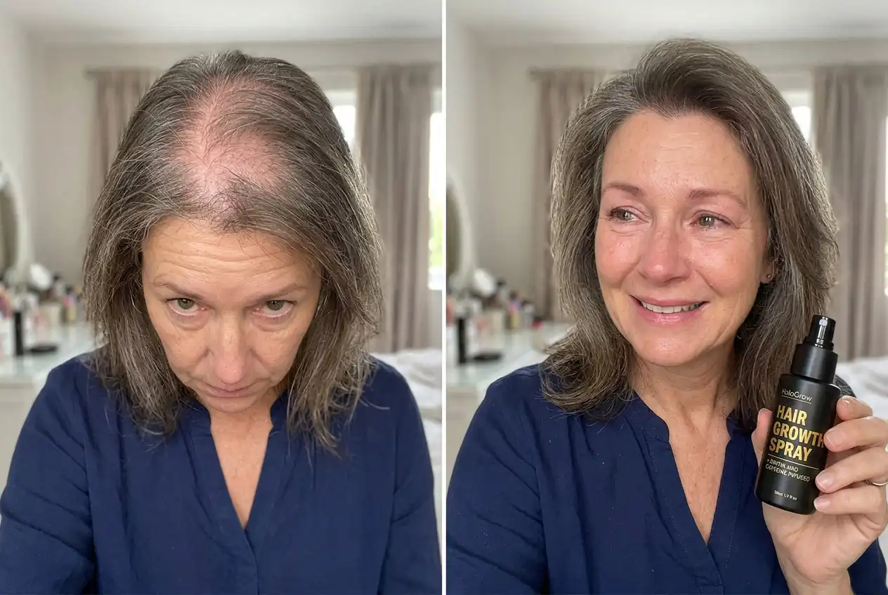
*results may vary
'I'm 56 and my crown had thinned so badly I couldn't wear my hair down anymore, I was living in headbands and scarves. My daughter ordered Crowned for me after reading an article about it. I'll be honest, I didn't expect much. But after about 6 weeks I could see tiny hairs sprouting where there had been nothing for years. Now at 4 months, my hairdresser says she's never seen regrowth like it. I actually cried in the salon.', Margaret T., 56, Toledo
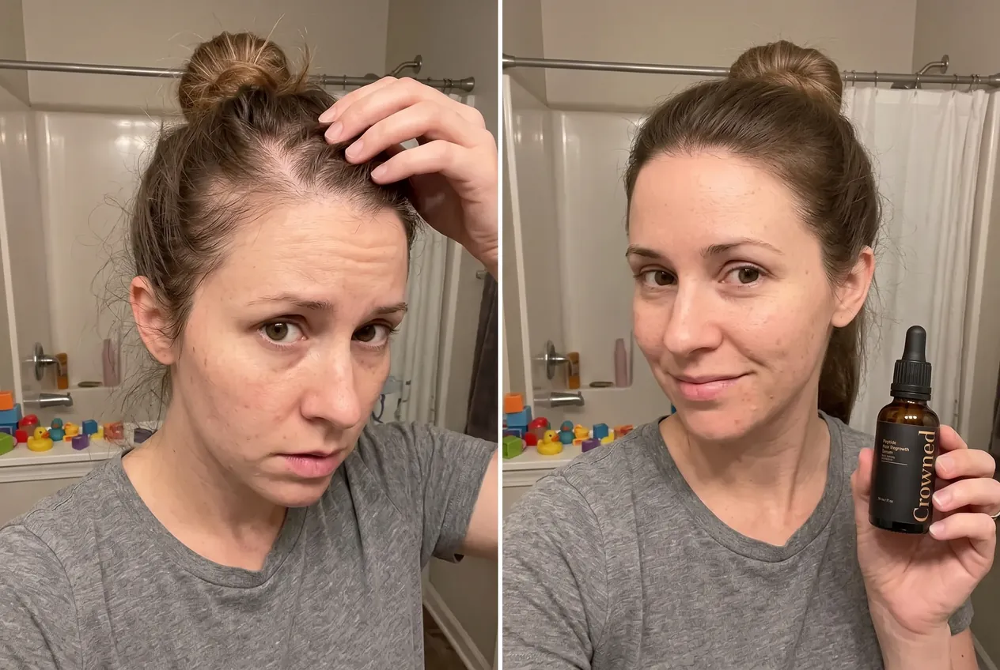
*results may vary
'I'm only 32 but I noticed my part line getting wider and wider after having my second baby. I was terrified it was going to keep getting worse. I caught it early with Crowned and within 8 weeks my hairdresser asked me what I'd been doing differently. My ponytail is thick again and the shedding in the shower has basically stopped.', Jessica L., 32, Boise
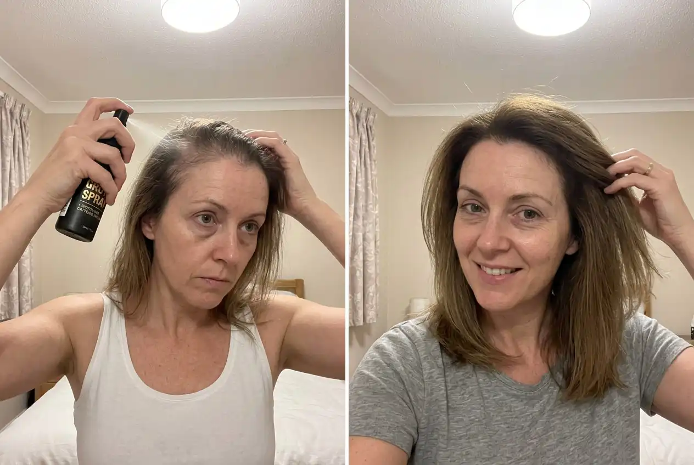
*results may vary
'I've spent thousands on prescription treatments, biotin tablets, those red light combs, you name it, I've tried it. Nothing worked properly and the prescription foam made my scalp itch like mad. Crowned is the first product that's actually delivered visible results with zero side effects. My hair feels thicker every week. I wish I'd found this years ago instead of wasting all that money on junk.', Karen W., 47, Spokane
NICOLE'S MESSAGE TO YOU
When I asked Nicole what she'd say to women reading this, she didn't hesitate.
"I'd say: I was you. Not the hair loss part, I was the person standing behind you, watching you suffer and handing you products I knew wouldn't work. I did that for 20 years and it nearly broke me."
She glances around the salon, at the mirrors, the shelves, the chair where hundreds of women have sat and cried.
"So please believe me when I tell you: this is different. This actually works. I'm not just saying that because my name is on it. I'm saying it because I've seen it work on 400 women in my salon. Women I know by name. Women whose daughters I also cut. Women who came in hiding under scarves and now come in asking for layers because they've finally got enough hair for them."
"If you've tried everything, the shampoos, the pills, the oils, and nothing worked, it's not your fault. Those products were never designed to fix the real problem. Crowned is."
I asked Nicole if there was a way for our readers to get that same little bottle onto their own shelf, and as it turns out, there's a limited introductory offer for exactly that. A limited number of readers can test the formula with 70% off and FREE delivery. Take this quick 30-second quiz to find out if you qualify:
Are you currently experiencing hair thinning or hair loss?
How long have you been noticing hair loss?
Which areas concern you the most?
Have you tried other hair regrowth products before?
Where should we check delivery availability?
What's your age range?
Analyzing your answers...
Checking eligibility against promotion criteria...
Great news, you're eligible for the introductory 70% discount + FREE delivery on Crowned.
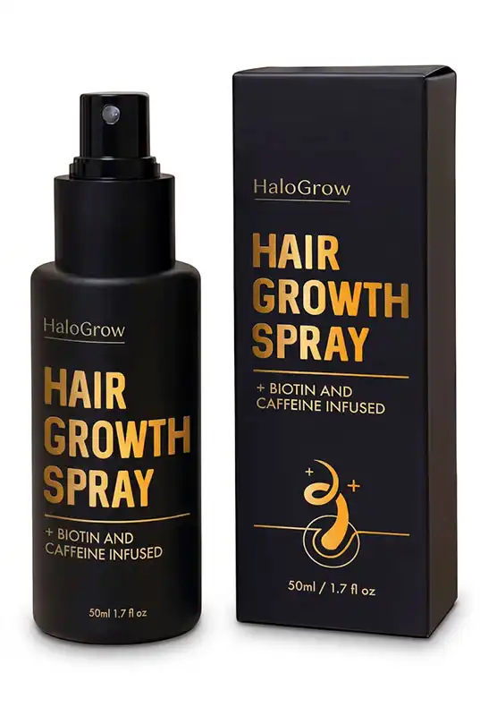
Claim My 70% Discount + Free DeliveryHaven't taken the quiz yet?
Find out if you qualify for the exclusive introductory 70% discount + FREE delivery in just 30 seconds.
Take the 30-Second Quiz
Comments
Newest